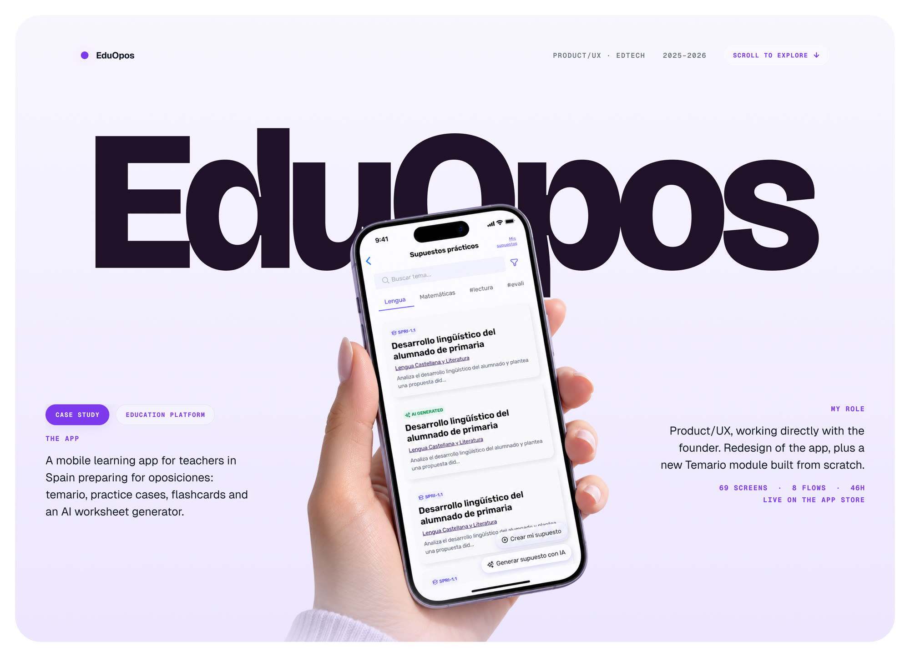
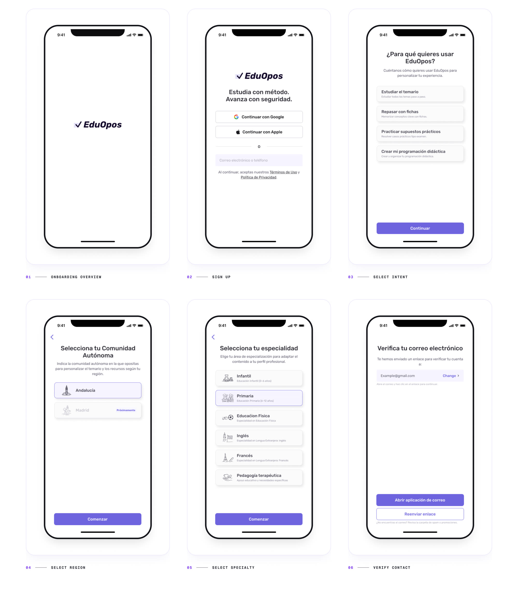
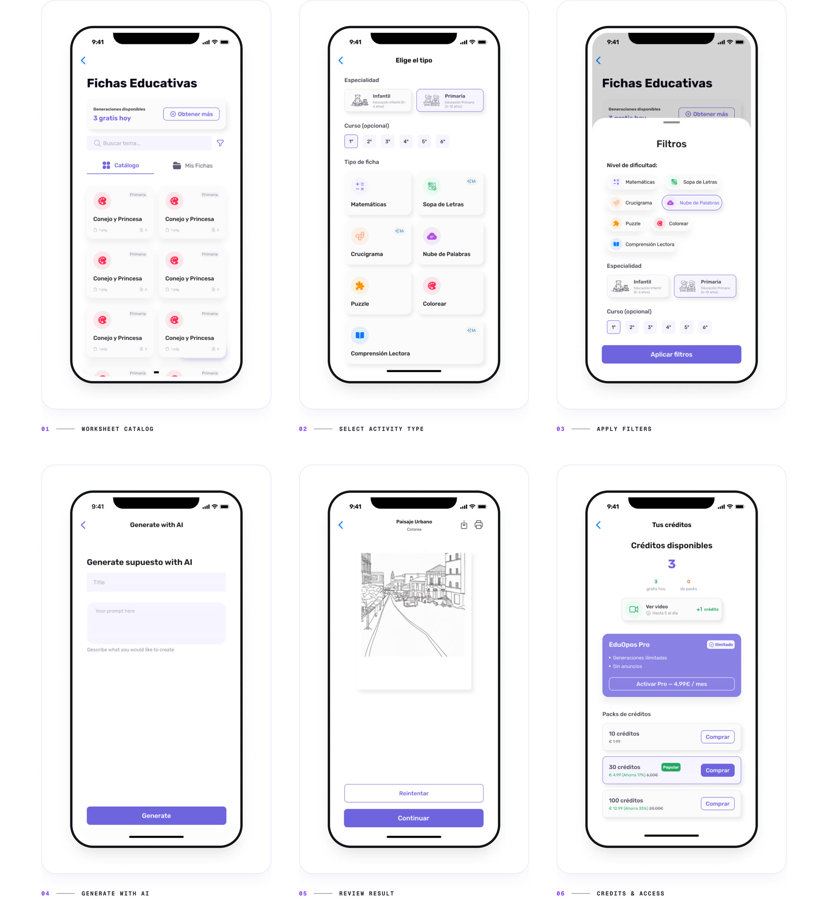
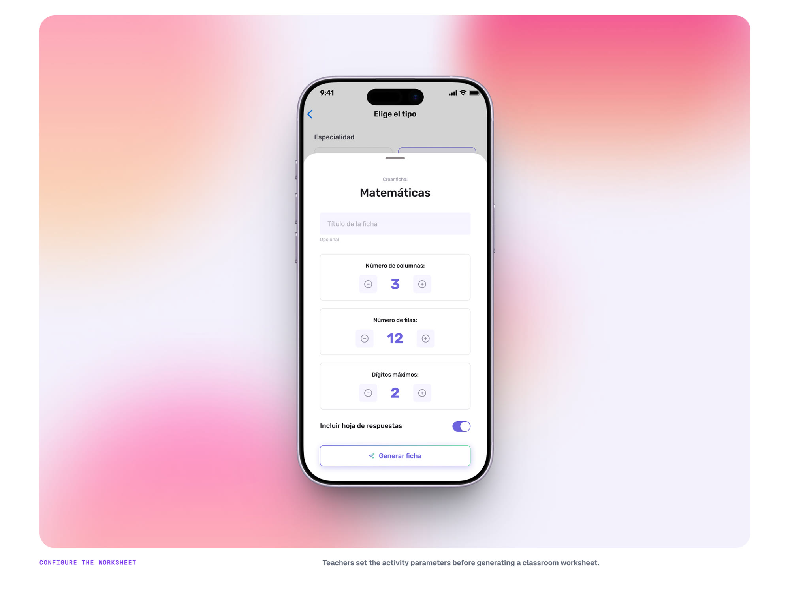
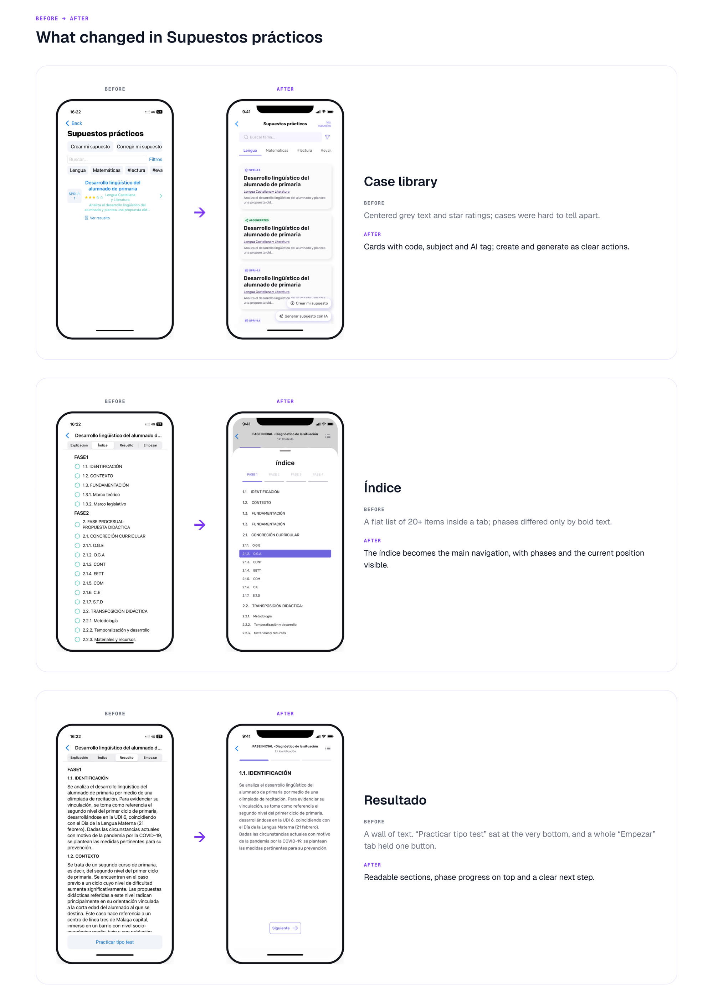
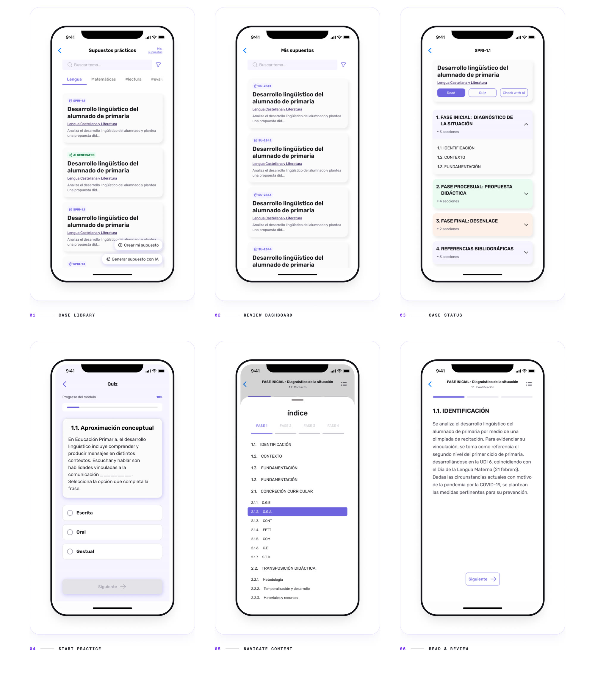
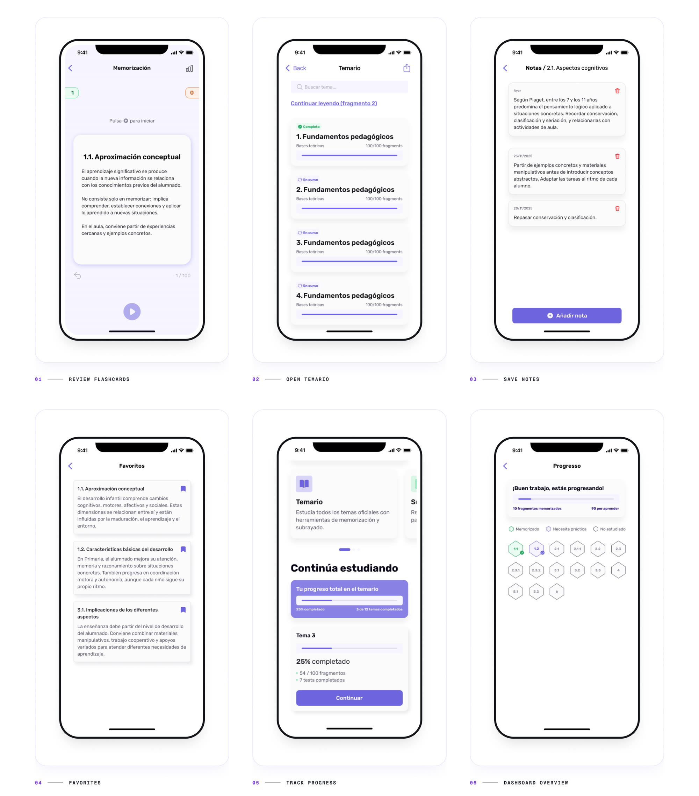
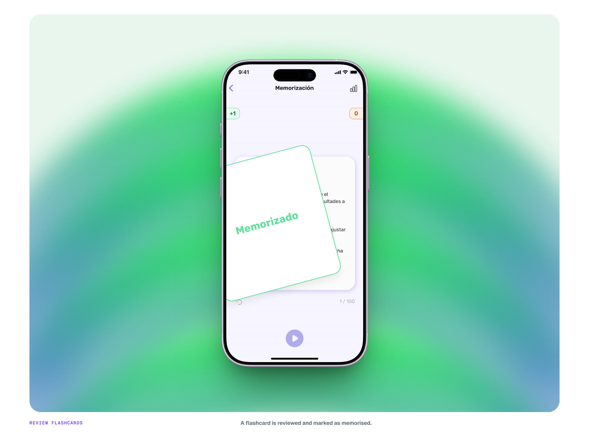
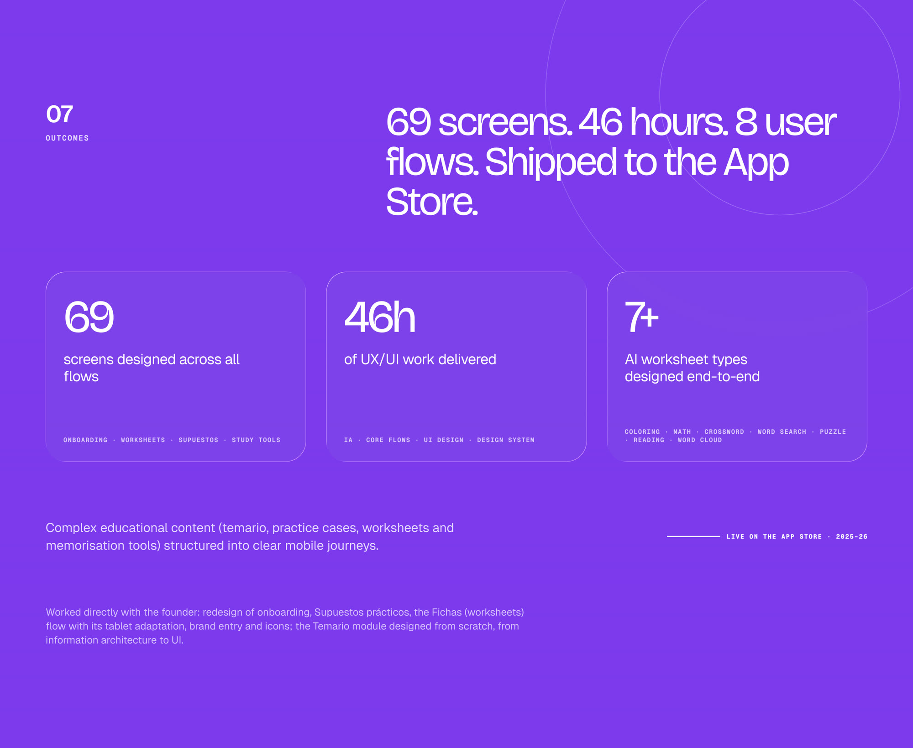

EduOpos
A mobile learning app for teachers in Spain preparing for oposiciones: temario, practice cases, flashcards and an AI worksheet generator.
Product/UX, working directly with the founder. Redesign of the app, plus a new Temario module built from scratch.

Context
A learning app to redesign, and a content-heavy Temario to build from scratch.
From syllabus anxiety to everyday confidence: a connected experience spanning worksheets, practice cases, memorization tools and long-range planning.
Challenge
Dense content. Nested cases. One small screen.
Each topic holds dozens to hundreds of fragments; practice cases nest phases, sections and references. The challenge was making that content scannable, navigable and personal on mobile.
└ Tema · topic
└ Section / Subgroup · keeps original order
└ Fragment · dozens to hundreds
Índice · replaces tabs
Resultado · core content
└ Fase Inicial · Procesual · Final
└ Sections → References
Estudio · practice
Users & problems
Two audiences, one dense learning system.
Lots of content. No structure for a phone yet.
Before designing screens, I mapped how temario, topics, sections and fragments relate, and how practice cases nest phases and sections.
Design decisions
Redesign where it existed. Structure from scratch where it didn’t.
Eight decisions that shaped the product. Each one started from structure and flow, not from visuals.
Product deep dive
Onboarding & personalisation Redesign
María and Carlos move through the same onboarding, but the system adapts intent, region and specialty into personalized materials.
The problem. Each autonomous community and specialty has its own temario. Onboarding had to capture both clearly before the user sees any content.
→ Design decisions 05, 07, 08

Product deep dive
Fichas / worksheet generator Redesign
An AI worksheet generator for teachers. I audited the existing flow and explored how to extend it beyond AI generation.
The problem. Teachers need ready materials fast: Matemáticas, Lectura, Crucigrama, Sopa de letras. Materials they already had stayed outside the app.
→ Design decision 06


Product deep dive
Supuestos prácticos Redesign
Practice cases with nested phases, sections and references, restructured to be read and studied on a phone.
The problem. A case goes Explicación → Índice → Resultado → Estudio, with Fase Inicial / Procesual / Final nested inside. Tab navigation couldn’t hold that depth.
→ Design decision 04


Product deep dive
Temario & study loop New module
Temario, fragments, statuses, notes and progress: the daily study loop for opositores.
The problem. Topics hold dozens or hundreds of fragments in a fixed order. Opening each one separately would make studying slow, and progress could easily repeat across screens.
→ Design decisions 01, 02, 03


Visual language
A visual language built for teaching, not browsing.
Purple signals action, lavender provides calm context, and real classroom photography keeps the UI grounded in everyday teaching life.
Typography
Geist keeps dense syllabus content legible at small sizes. Bricolage Grotesque brings editorial warmth to headings — making learning feel less intimidating.
Outcomes
69 screens. 46 hours. 8 user flows. Shipped to the App Store.
Complex educational content (temario, practice cases, worksheets and memorisation tools) structured into clear mobile journeys.
My contribution focused on selected user flows, UI improvements, feature design and design system work within the existing product — including an audit and redesign of the Fichas (worksheets) flow and its tablet adaptation.

Have a complex product
that feels hard to use?
This case shows the kind of work I do best: turning dense, structured content into mobile experiences people can actually use.